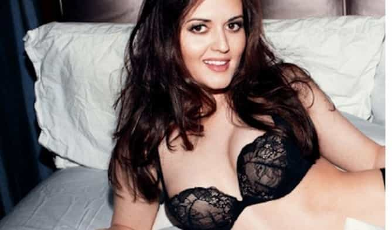

< < < Back
Outrage At Halloween Costumes Shows Feminism’s War Against Femininity – Return Of Kings
On All Hallows’ Eve 2014, the hit television series, The Big Bang Theory, aired an episode in which two characters debated about sex and science. A magazine wanted to include Bernadette, a microbiologist, in a profile of “the fifty sexiest female scientists in California.” Amy, a neuroscientist, said, “I think it’s awful,” adding, “Bernadette…should be celebrated for her achievements, not her looks.”
Bernadette countered, “Why can’t someone be thought of as both smart and pretty?”, echoing the words of real-life science communicator Cara Santa Maria, who wished that one day girls could avoid “Sophia’s” choice and be able to say, “I’m pretty, and I rule at math.” Amy contacted the magazine and got them to scuttle the article.
The day after Halloween, life imitated art. An article entitled “The Reviews Are In For ‘Delicious Women’s PhD Darling Sexy Costume’” skewered a company’s “doctoral candidate” Halloween outfit. An assistant editor at Salon also entered the fray, along with Huffington Post, Inside Higher Ed, The Today Show, and the Boston Globe.
The Daily Kos listed it as part of the “war on women.”
Trigger warning: unrealistic depiction of a female soldier
The Guardian newspaper made a similar critique in October 2014, when it lambasted a video “encouraging girls to go into science” because that video “featured sexist cliches including high heels and lipsticks.”
Sexist cliché? Women don’t wear high heels and lipstick? Feminists seem to think women’s sexuality stops at the laboratory door, that women’s brains are disconnected from their bodies. Let’s go through five problems with the feminist critique.
First, the over-reaction to the costume is bizarre, since the company makes police costumes, circus ringleader costumes, even clownfish (think Finding Nemo) costumes. Why is a doctoral candidate off-limits?
Second, while the criticism lambasted “male tenured faculty,” “the patriarchy” (of course), “the male gaze,” “Harry Potter’s child bride” (I’m as confused as you are), and “rape culture” (Bingo!), the company’s media contact in 2011 was a woman and the national sales director is a woman. I thought ignoring women who were in charge was an example of misogyny.
Third, men presumably aren’t buying these costumes; women are, and women have agency. Or, as one feminist put it: “[W]hen we were teenagers and twentysomethings, we pretty all [sic] WANTED to dress sexy.… [W]hat drives it? If it’s companies pushing it on us that’s wrong…. If it’s driven by demand… then it’s less clear if or where the issue is,” she concludes (unable, naturally, to suggest that women take responsibility for anything).
Fourth, at Oxford University, students often have to wear gowns. Most of the time, I noticed that women would wear tights with their gowns, which, for undergraduates, did not go down that far. They thus resembled the model in the Halloween costume.
Fifth, and most importantly, the feminist objections hinge on the assumption that female intellectuals aren’t interested in displaying their femininity. Here are two female mathematical biologists, professors—not just doctoral candidates—at two of the world’s greatest universities, Princeton and Harvard.

Corina Tarnita, Assistant Professor of Ecology and Evolutionary Biology at Princeton University, and Franziska Michor, Associate Professor of Biostatistics and Computational Biology at Harvard University. (They are from Central/Eastern Europe. Coincidence?)
And here is Big Bang Theory guest star Danica McKellar, who graduated summa cum laude with a degree in mathematics from the University of California at Los Angeles. One of her research papers is entitled, “Percolation and Gibbs states multiplicity for ferromagnetic Ashkin–Teller models on Z2.” (Conflict-of-interest disclosure: Danica described me as “the incomparable, brilliant Jonathan Farley” in her New York Times best seller, Hot X.)

Why is feminism seeking to decapitate women? Bernadette tells Amy her thoughts:
“[Y]ou got jealous…you don’t like people expressing their sexuality because no one wants you to express yours.”
Feminist Andrea Dworkin
Of course, Bernadette is slightly wrong: feminists usually celebrate the smashing of barriers to the expression of female sexuality. If a woman walks around New York City in tight clothing and men notice, shame on those men, because women do not wear micro-minis and stiletto heels to make themselves appealing to men.
Feminists’ reaction to the Halloween costume is scientific evidence that even they don’t believe this claptrap: Though they prioritize career over family (i.e., appealing to a mere man) and insist that a 35-year-old woman finishing her second post-doctoral fellowship is just as able to attract a high-quality mate and have children as a 20-year-old Princeton co-ed, they know the truth.
They see the wrinkles in their faces and it is like staring into a chasm—these strong, independent women must run to Jezebel.com for reassurance and a group hug—for, as the Boston Globe puts it, “Halloween Is a Cruel Reminder That Women Must Strive to Be Sexy.”
They don’t have to, but if they are as smart as their advanced degrees suggest they are, they won’t mock the one sexual preference modern feminism considers fair game.
In conclusion, men like attractive women. Judging from the plethora of “sexy fill-in-the-blank” Halloween costumes, women like to be attractive. This is what causes the species to continue. It’s not rocket science.
And you don’t need a Ph.D. to figure it out.
Read More: “Gravity” Perfectly Depicts Women In Science


{kind=link}
{kind=link}
{kind=link}
{kind=link}
{kind=link}
{kind=link}
{kind=link}
{kind=link}
{kind=link}